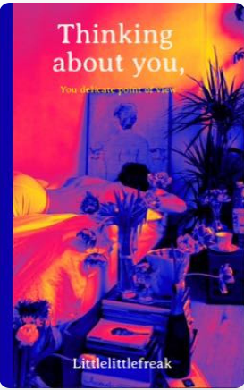
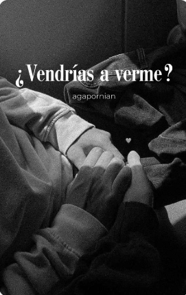
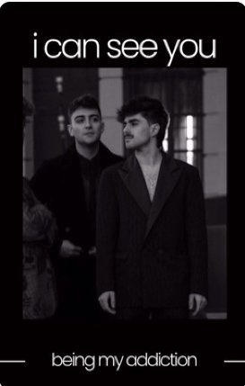

Thinking about you, your delicate point of view
Es la desesperación que se crea entre el suelo y el techo de cristal que es la fama, aquel miedo de ser olvidado el que le llevo a Juanjo Bona a cazar a su nueva estrella.
Lo que no sabía era que en el resultado final de su exposición se reflejaría un amor inesperado.
O donde Juanjo es un fotógrafo exitoso y Martin el hombre más especial que ha visto.
Fanfics de Wattpad COMPLETOS

200 latidos por minuto
Martin piensa que Madrid está lleno de miradas que esquivan, de hombres aturdidos por demasiadas mujeres, de amigos que nunca están y de almas ingobernables como Juanjo que navegan ese ambiente como si hubieran nacido con ese veneno dentro.
Martin sabe que hasta los tontos tienen un tope, pero los límites parecen borrarse cuando entra a trabajar en el hospital en el que le conoce a él.
It's me who's been making the bed
No era que Juanjo Bona odiara a Martin Urrutia. Era solo un chico de el Pais Vasco que se volvió increíblemente famoso gracias a algunos videos ridículos en una aplicación aún más ridícula, consiguió un contrato con un sello discográfico mundialmente importante, se olvidó de sus raíces y ahora pretendía ser una estrella del pop. Ni siquiera le importaba que todos estuvieran creyendo su papel del chico más dulce que la miel. Era que Juanjo conocía ese juego demasiado bien (después de todo, estaba dentro de él), sabía cuán falsas podían llegar a ser las personas y cuán manipuladoras eran en realidad. Sobre todo en esa industria. [...]
am i homophobic? - juantin
donde juanjo cree que es homófobo porque no soporta ver a martin con otros chicos que no sean él
o
el au basado en el post de reddit en el que dos compañeros de piso se gustan pero uno está convencido de que es hetero hasta que se da cuenta de que lo que le pasa no es homofobia sino celos
La constante del cambio -juantin
Han pasado 4 años desde que terminó OT y 2 desde que Juanjo y Martin decidieron cortar su relacion.
Despues de este tiempo, vuelven a encontrarse para la reunion anual que el grupo acordó hacer al salir de la academia para no perder el contacto, que lleva sin celebrarse ya más dos años por falta de tiempo y carga de trabajo del grupo. Alli ambos se dan cuenta de que ya no son la misma persona de la que se enamoraron, y eso no tiene por que ser necesariamente malo. Lo que sigue igual son sus ojos: siguen mirándose de la misma manera, nunca dejaron de hacerlo. [...]

¿Vendrías A Verme?
Dónde Juanjo y Martin son mejores amigos o
Dónde tras años enviándose cartas se conocen o
Best Friends to lovers

i can see you
Martin es perseguido por los paparazzis por las ajetreadas calles de Madrid. No paran de preguntarle sobre su reciente relación con el cantante conocido por ser un rompecorazones: Juanjo Bona. [...]
VIAJE A NINGÚN LADO
Martin, un chico de 21 años bastante solitario acaba de terminar la carrera de enfermería en Bilbao. Agobiado por los recientes acontecimientos entre su grupo de amigos decide huir de su entorno y probar suerte en la capital.
Allí conocerá a Juanjo, un chaval de 23 años perfecto, al que todos consideran el enfermero modelo del servicio. Parece llevarse bien con todo el mundo, con todos menos con el chico nuevo, que parece sacarle de quicio.